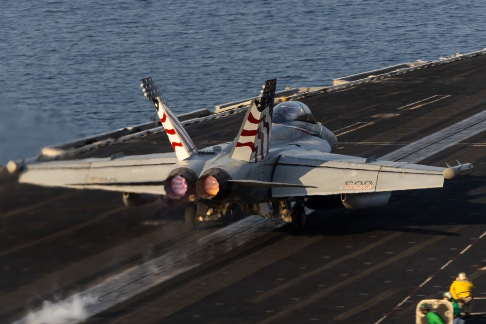

An EA-18G Growler launched from USS George H.W. Bush on Nov. 4 while the ship was at sea in the Middle East
A Navy still posted Thursday shows a Growler from Electronic Attack Squadron 140 leaving the flight deck of USS George H.W. Bush on Nov. 4. The caption says the carrier is deployed to the U.S. 5th Fleet area of operations to support maritime security and stability in the Middle East. USNI News reported Friday that the Theodore Roosevelt Carrier Strike Group pulled into Singapore the same day for a port visit. USNI lists the group as USS Theodore Roosevelt with Carrier Air Wing 11, cruiser USS Chosin, and destroyers USS Paul Hamilton and USS Decatur, and says the group is expected to head to the Middle East after the visit. A separate Navy still from Nov. 3 shows sailors aboard USS George Washington watching fleet oiler USNS Oscar V. Peterson during a fueling at sea, also in the 5th Fleet area.